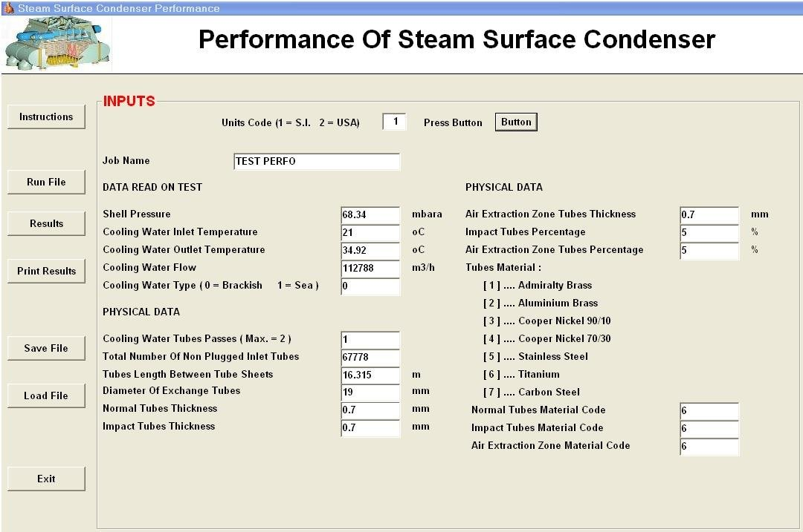
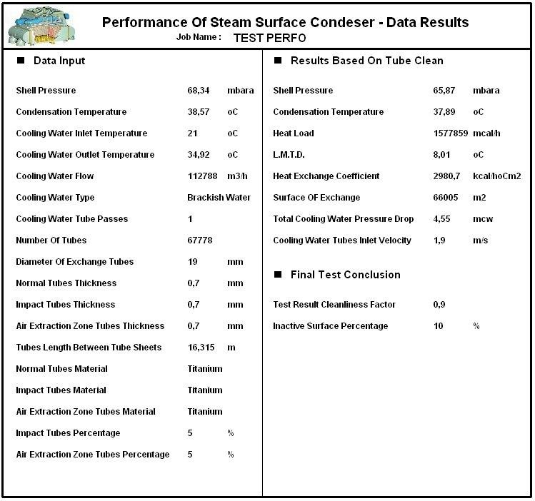

Steam Surface Condenser Performance Software
Analysis of condenser performance tests: expected steam pressure, tube fouling and ineffective surface.
Condenser performance test analysis
Based on the data taken during the condenser performance test, this program calculates the expected steam pressure with clean tubes and compares it with the actual measured value. The result is the test cleanliness factor (tube fouling) and the inactive surface as a percentage of the total, which shows how much of the installed tube surface is no longer working. A complementary program for performance curves also exists.
Data entry
The input window has two groups of data. Data read on test: shell pressure, cooling water inlet and outlet temperature, cooling water flow and type of water (brackish or sea water). Physical data of the condenser: number of cooling water passes, number of non-plugged tubes, tube length between tube sheets, tube diameter, thickness of the normal, impact and air extraction zone tubes, their percentages and the tube material (admiralty brass, aluminium brass, copper-nickel 90/10 and 70/30, stainless steel, titanium or carbon steel).

Results and final test conclusion
The results sheet gives, for clean tubes, the expected shell pressure, condensation temperature, heat load, LMTD, heat exchange coefficient, exchange surface, cooling water pressure drop and tube inlet velocity. The final test conclusion gives the cleanliness factor found in the test and the percentage of inactive surface.

Documentation
See the complete example with every input and results window in the program documentation:
Steam Surface Condenser Performance – full documentation (PDF)Related programs
- Steam Surface Condenser – thermal and mechanical design of steam surface condensers per HEI
- Condenser Revamping – renovation of condenser tube bundles and production gains
- Dual Pressure Condenser – condensers with a different turbine pressure in each shell
Condensers, feedwater heaters, deaerators, district heating, natural gas heaters and more, with a description of each program on the home page.
See all programs →